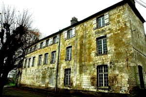
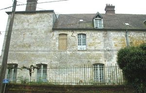
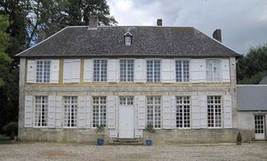
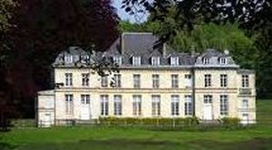

Recensement Jean-Claude Truffet




| Département | 62 — Pas-de-Calais |
| Canton | Pas en Artois |
| Commune | Pas en Artois |
| Type d'édifice | Château |
| Période d'origine | XIV-XVIII |
| Coordonnées GPS | 50° 10' 27" Nord, 2° 26' 24" Est |
Deux châteaux dans cet article Pas en Artois et Grena à Pommera PAS en ARTOIS, vers 1050, Anselme 1er de Pas, est le premier seigneur connu. En 1237, le mariage d'Alix de Pas, la dernière de ce nom, avec le seigneur de Heilly, Jean de Créquy, fit passer le terre dans cette famille. En 1452, le château appartenait à Louis de Luxembourg, comte de Saint-Pol. Le mariage de Marie de Luxembourg avec Léonor d'Orléans le transmit à cette famille où il demeura jusqu'en 1698, date de la vente de la châtellenie par Marie d'Orléans, duchesse de Nemours, à Jean-François Ansart, seigneur de Gonnehem. En 1716, elle fut acquise par Joseph-Sylvestre de Virgile, gentilhomme du comté d'Eu en Normandie. En 1765, pour la dernière fois, elle fut vendue à Jean Antoine de Fourmestreaux, l'une de ses filles épousa en 1787 Augustin-Joseph le Mesire du Broile; ce sont les descendants de cette famille qui sont les propriétaires actuels du château. Le premier château était une véritable citadelle flanquée de tours et entourée de fossés. Les guerres le ruinèrent plusieurs fois. Le château actuel a été construit au milieu d'un parc en 1780 par Jean Antoine de Fourmestreaux. Il comprend un corps de logis flanqué de deux ailes très légèrement saillantes. Son soubassement est en grès et renferme de magnifiques caves, dont les voûtes sont assez plates. La demeure est en pierre blanche ; ses deux niveaux sont séparés par une double moulure, ce qui accentue son caractère horizontal.
A quelques K.M. au nord ouest à POMMERA
Le château de Grenas POMMERA, est une gentilhommière de la fin du XVIIIe siècle a été construit vers 1790 dans un style Louis XVI très simple mais élégant par Louis Nicolas de Beugny, seigneur de Pommera ; il a ensuite appartenu à son gendre, M. Harbaville, auteur du Mémorial Historique du Pas-de-Calais. Le jardin, exigu mais dun dessin curieux, est lun des plus anciens « jardins anglais » dArtois ; il se développe à lEst de la maison, et comporte de nombreux arbres, largement centenaires. Au bout d'une allée de tilleuls, le corps principal, de simple épaisseur, se distribue sur sept travées. La maison comporte un vaste piano mobile, un premier étage plus modeste ainsi que des combles où s'ouvre une lucarne. Le rez-de-chaussée, en légère élévation, est en pierre de taille et ouvre sur 6 grandes fenêtres à petits carreaux. Le premier étage est en torchis et repose sur un bandeau de pierre. La façade du parc est totalement en torchis. Au sud, les communs forment une aile, partie plus ancienne en briques, elle date du XVIIe siècle comme en témoigne une date sur le linteau d'une porte. : Le château de Grena au hameau de Grena.
Famille de Louis de Luxembourg, Pommera Famille de Louis Nicolas de Beugny,"
Deux châteaux dans cet article Pas en artois grav 3-4- et Pommera Grenas grav 1-2 GPS : 50° 10' 27" Nord, 2° 26' 24" Est